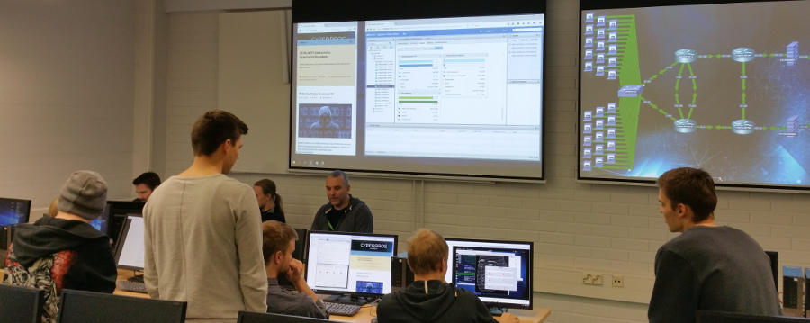
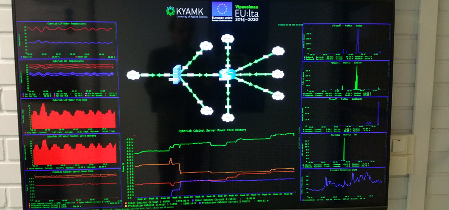

Kaakkois-Suomen ammattikorkeakoulu
Kotkan kampus
Käyntiosoite Pääskysentie 1, 48220 KOTKA
P. 044 702 8888
Tiimimme toiminta on lähtenyt suorastaan lentoon. CyberPros Academyn konesali ja siihen liittyvät tehokkailla tietokoneilla varustetut kaksi opetusluokkaa on saatu rakennettua valmiiksi. Kyberturvallisuushankkeet ovat alkaneet tuottaa hedelmää. Lähes kaikki sekä kyberturvallisuuden että tietoverkkotekniikan laboratoriotyöt voidaan nyt tehdä konesalissa virtualisoidussa ympäristössä pilvipalveluna. Selaimella toimiva virtuaalilaboratorioympäristö mahdollistaa jokaiselle opiskelijalle etäkäytettävän jopa useiden kymmenien virtuaalikoneiden kokoisen laboratorioympäristön. Kyberturvallisuuden erikoistumiskoulutus 30 op on myös täydessä vauhdissa. Erikoistumisopinnoissa tehdään paljon käytännön laboratoriotöitä virtuaalilaboratorioympäristössä.
Palvelunestohyökkäys käynnissä
CyberLab seurantanäyttö
Kyberturvallisuudessa riittää töitä 22.02.2017 KymenSanomien koulutusliitteessä julkaistiin 21.2.2017 seuraava artikkeli: iso... Lue lisää...
Harjoittelu- ja opinnäytetyöpaikat 11.11.2016 Yhdessä paikassa linkit tuhansiin hakuihin: harjoittelu-, projektityö- ja opinnäytetyöpaikat!... Lue lisää...
Development of Virtual Online Course Packages 21.10.2016 SEFI conference 2016 "Engineering Education on Top of the World: Industry University Cooperation" The... Lue lisää...
Jaakko Nurmi: Implementation of Nested Virtual Laboratory System 21.04.2016 Read here an excellent Thesis work of Jaakko Nurmi: Jaakko Nurmi:Implementation of Nested Virtual Laboratory... Lue lisää...
Kyberturvallisuuden erikoistumiskoulutuksen seminaari 6.4.2016 08.04.2016 Kymenlaakson ja Metropolian ammattikorkeakoulut järjestivät yhdessä ke 6.4. 2016... Lue lisää...
Harjoittelu- ja työpaikat 08.04.2016 Tälle sivulle kerätään Kymenlaakson alueella olevia harjoittelu- ja työpaikkoja. Lisätietoja... Lue lisää...
Kyberturvallisuudessa riittää töitä 22.02.2017 Lue lisää...
Harjoittelu- ja opinnäytetyöpaikat 11.11.2016 Lue lisää...
Development of Virtual Online Course Packages 21.10.2016 Lue lisää...
Jaakko Nurmi: Implementation of Nested Virtual Laboratory System 21.04.2016 Lue lisää...
Kyberturvallisuuden erikoistumiskoulutuksen seminaari 6.4.2016 08.04.2016 Lue lisää...
|
CyberPros Academy GameLab ICTLAB Xamk |
|---|
Kaakkois-Suomen ammattikorkeakoulu
Kotkan kampus
Käyntiosoite Pääskysentie 1, 48220 KOTKA
P. 044 702 8888